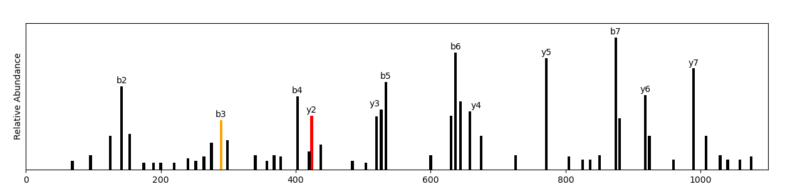

Peptide Sequencing Algorithm for Theoretical Datasets
| Description |
For more information, see the GitHub repository This project was facilitated by Professor Matthew Tien. Proteomics (the large-scale study of peptides and proteins) is an increasingly powerful and indispensable technology in molecular cell biology (Pandey and Mann, 2000). The foundational technology in mass-spectrometry-based proteomics is peptide sequencing. Peptide sequencing is the practical process of determining the amino acid sequence of all or part of a protein or peptide. This may serve to identify the protein or characterize its post-translational modifications (Steen and Mann, 2004). There are several approaches for de novo peptide sequencing—the method in which a peptide amino acid sequence is determined from tandem mass spectrometry. Novel approaches, such as machine learning-based peptide-spectrum match rescoring, seek to open up the immunopeptidome (Adams et al., 2023). However, still the most common is combinatorial, which simulates each possible peptide given the known amino acids and mass spectrometry data (Lin et al., 2013). The runtime of this approach factorially increases with marginal increases in peptide length. In a crude approach, a peptide of length 8 may take 5 seconds to simulate, while a peptide of length 12 will take 16.5 hours. Professor Tien and I developed a prototype greedy algorithm that iteratively builds a peptide from a current peptide fragment (starts as a dipeptide) and the possible amino acids that it could combine with to form a present mass-to-charge ratio. Our algorithm has a timecomplexity of O(N) compared to O(N!). However, this approach is only effective for theoretically optimal mass spectrometry data. It does not consider extensive fragmentation rules, the various peptide modifications resulting in mass shifts, or selective enrichment and detection methods for modifications (Steen and Mann, 2004). |
| References |
Adams, C., Laukens, K., Bittremieux, W., & Boonen, K. (2023). Machine learning‐based peptide‐spectrum match rescoring opens up the immunopeptidome. Proteomics, 24(8). https://doi.org/10.1002/pmic.202300336 Lin, H., He, L., & Ma, B. (2013). A combinatorial approach to the peptide feature matching problem for label-free quantification. Bioinformatics, 29(14), 1768–1775. https://doi.org/10.1093/bioinformatics/btt274 Pandey, A., & Mann, M. (2000). Proteomics to study genes and genomes. Nature, 405(6788), 837–846. https://doi.org/10.1038/35015709 Steen, H., & Mann, M. (2004). The abc’s (and xyz’s) of peptide sequencing. Nature Reviews Molecular Cell Biology, 5(9), 699–711. https://doi.org/10.1038/nrm1468 |